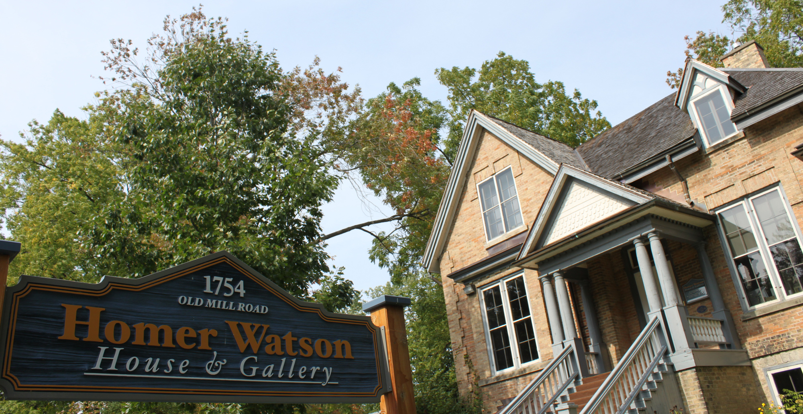

Homer Watson House

HISTORY
Thirteen years prior to purchasing the Ferrie House, Homer Watson began his art career. Primarily self-taught, Homer Watson was given a set of paints from his aunt when he was just fifteen and he used his father’s collection of books as teaching examples. During his late teen years, Watson spent time in Toronto studying the Ryerson collection of art at the Normal School. Ten years after starting his art career, Homer Watson would rise to celebrity status after the inaugural exhibition of the newly formed Royal Canadian Academy.
Homer Watson | The Young BoyIn was there, in 1880 that Watson sold to the Governor General The Pioneer Mill which was purchased as a gift for Queen Victoria. The painting sold for $300. This solidified Watson’s decision to pursue a career as an artist. A second painting was sold to Queen Victoria in 1881 called The Last Day of the Drought. These paintings were hung in Windsor Castle, where they remain today in the private quarters as part of the Royal Collection. Following the sale of his first painting to the collection of Queen Victoria, Homer Watson married his sweetheart Roxanna Bechtel and rented the upper floor of the Ferrie House in 1881. Homer Watson had long admired the Ferrie House for its natural light, large windows and beautiful landscape. Two short years after moving into the Ferrie House, Homer Watson purchased the house and lived in the home until his death in 1936.
Homer Watson | The Young Artist As styles changed over time, so did Homer Watson’s great works. Early in his career, his paintings resembled a photograph with great attention to detail. Later in his life, his paintings began to resemble abstract art with very wide brush strokes. This change in style produced a dramatic change in Watson’s work, giving him freedom to diversify his portfolio.
After a lifetime of creating and selling his art, Watson had built a small fortune for himself; however, the stock market crash of 1929 wiped out most of his wealth. Watson was forced to sell some of his favourite pieces from his private collection and was never able to reacquire his fortune.
Homer Watson | The Experienced ArtistHomer Watson died on May 30th, 1936 at the age of 81 and is buried at the Doon Presbyterian Cemetery on Mill Park Drive. His sister Phoebe, who lived in the house since the passing of Watson’s wife Roxanna in 1918, took over ownership of the house. After Phoebe’s death in 1948, Ross and Bess Hamilton took over the mortgage and management of the estate to prevent foreclosure of the House. Ross Hamilton was a friend of Homer Watson and was hired by the Waterloo Trust to promote and sell Watson paintings in the early 1930s. The Hamiltons opened the Doon School of Fine Arts to help offset the preservation costs associated with the house.